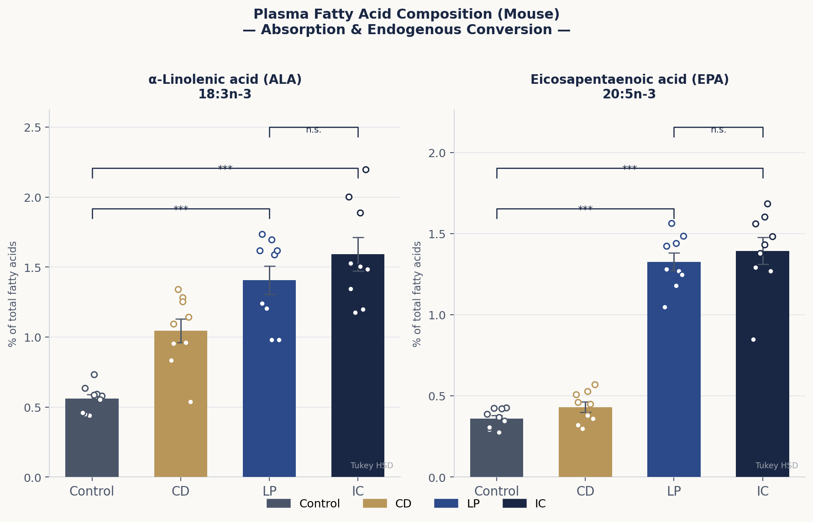
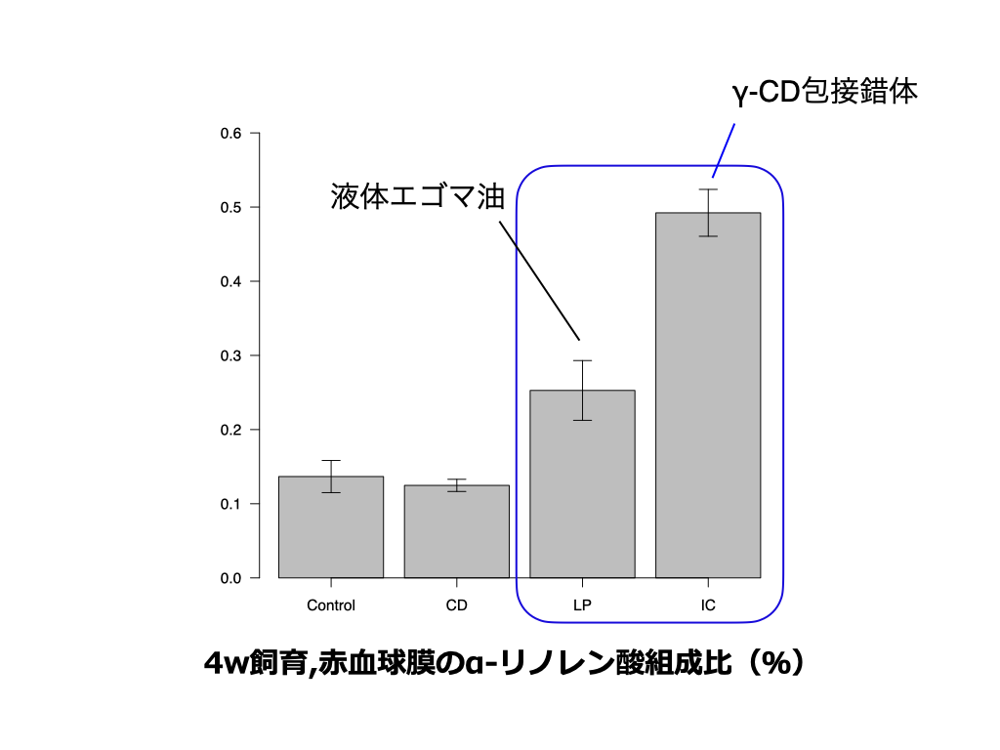
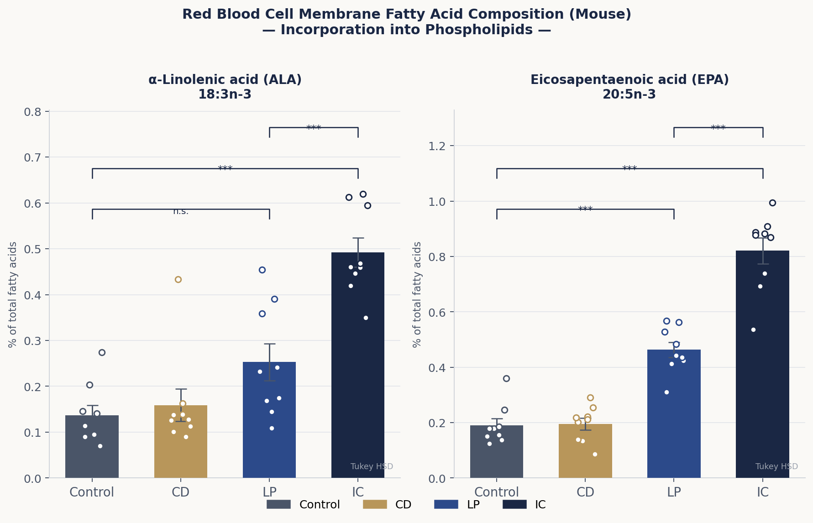

研究の背景
エゴマ油をγ-シクロデキストリン（γ-CD）と共摂取することで血漿中のα-リノレン酸（ALA）吸収が改善されることを明らかにしてきました。本研究では、この効果が血漿だけでなく肝臓・赤血球膜にも波及するかをマウスを用いて解析しました。なお飼料中にEPAは含まれないため、血中・各組織で観察されるEPAの上昇は体内でのALA→EPA変換（Δ6不飽和化酵素経路）の活性化を意味します。
4群を設定しました：Control（標準精製飼料）、CD（食物繊維をγ-CDで置換）、LP（大豆油の一部をエゴマ油で置換）、IC（食物繊維の全量と大豆油の一部をエゴマ油粉末で置換）。
吸収から利用までの流れ
エゴマ油由来のALAが体内でどのように利用されるかを、血漿→肝臓→赤血球膜という経路で追跡しました。
- 血漿（吸収と体内変換）：LP・IC群ともにControl・CD群と比べてALA・EPAが有意に上昇（p<0.001）。LP vs IC間に有意差なし（n.s.）。
- 肝臓（代謝）：LP・IC群でALA・EPAが有意に上昇（p<0.001）。肝臓はΔ6不飽和化酵素が豊富で、ALA→EPA変換の主要臓器。LP vs IC間に有意差なし（n.s.）。
- 赤血球膜（リン脂質としての利用）：EPAはControl・CD・LP・IC全群間で有意差あり（p<0.001）。IC群が最高値を示し、エゴマ油粉末摂取が末梢組織レベルでの脂質の質的改善をさらに促進することを示した。
食事由来のALAが腸管で吸収され、肝臓でEPAへと変換され、赤血球膜リン脂質として全身に届く——この一連の経路全体にわたって、γ-CDとエゴマ油の共摂取が正の影響を与えることが明らかになりました。
図・データ

Fig. 9 — マウスにおける血漿脂肪酸組成（全脂肪酸中の割合, %）。4群：Control（標準精製飼料）、CD（食物繊維をγ-CDで置換）、LP（大豆油の一部をエゴマ油で置換）、IC（食物繊維の全量と大豆油の一部をエゴマ油粉末で置換）。EPAは飼料中に含まれないため、その上昇は体内でのALA→EPA変換を反映する。値は平均値±SEM（n=9）。* p<0.05, ** p<0.01, *** p<0.001（one-way ANOVA + Tukey HSD）。

Fig. 10 — マウスにおける肝臓脂肪酸組成（全脂肪酸中の割合, %）。群の設定はFig. 9と同様（n=9）。肝臓はΔ6不飽和化酵素の主要発現臓器であり、ALA→EPA変換の場として機能する。LP vs IC間に有意差なし（n.s.）。* p<0.05, ** p<0.01, *** p<0.001（one-way ANOVA + Tukey HSD）。

Fig. 11 — マウスにおける赤血球膜脂肪酸組成（全脂肪酸中の割合, %）。群の設定はFig. 9と同様（n=9）。EPAはControl・CD・LP・IC全群間で有意差あり（p<0.001）、IC群が最高値を示した。赤血球膜リン脂質へのEPA組み込みは末梢組織レベルでの脂質改善を反映する。* p<0.05, ** p<0.01, *** p<0.001（one-way ANOVA + Tukey HSD）。
今後の展望
γ-CDとエゴマ油の共摂取がなぜ全身の脂肪酸組成を変化させるのか、その詳細なメカニズム（腸管での消化・吸収過程、遺伝子発現への影響など）の解明を目指しています。食事から摂取したオメガ3系脂肪酸を効率よく全身へ届ける新たな食品機能性の創出に向け、研究を進めてまいります。
関連論文
Yoshikiyo et al. (2025) International Journal of Molecular Sciences — doi:10.3390/ijms26167776
Yoshikiyo et al. (2025) Molecules — doi:10.3390/molecules30020281
Yoshikiyo et al. (2023) Food Hydrocolloids for Health — doi:10.1016/j.fhfh.2023.100116